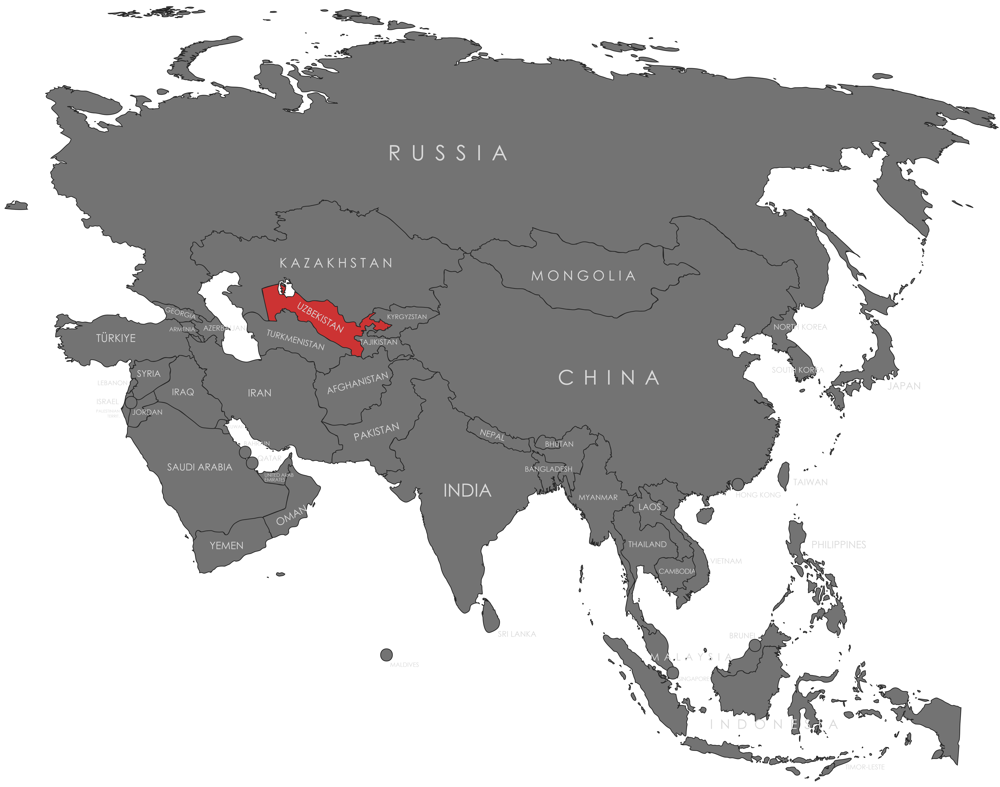

Specifications
- Local Name: Oʻzbekiston
- Proportion: 1:2
- Name of the Flag: Oʻzbekiston Davlat Bayrogʻi (State Flag of Uzbekistan)
- Adopted: November 18, 1991
Symbolism
- Blue: Sky and water, symbol of life
- White: Peace and purity
- Green: Nature, fertility, and new life
- Red stripes: Vitality and courage
- Crescent: Birth of a new nation
- 12 stars: Historical regions of Uzbekistan and continuity
Colors:
Shapes / Symbols:
Meaning / Special Display
- Flown on Independence Day, public holidays, and state buildings to signify national identity.
Description
- The flag embodies Uzbekistan’s independence, cultural heritage, and aspirations for peace.
- For its citizens, it signifies pride, hope, and national unity.

Return to Gallery